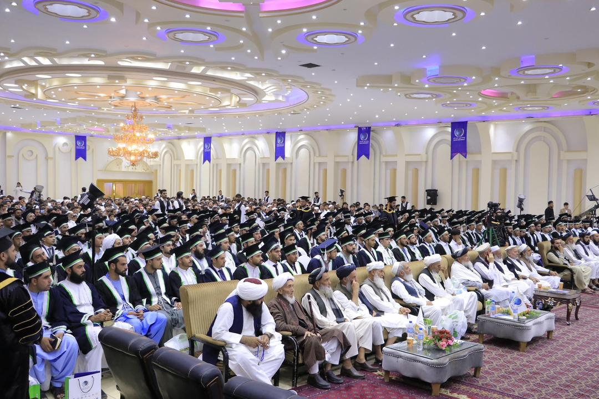
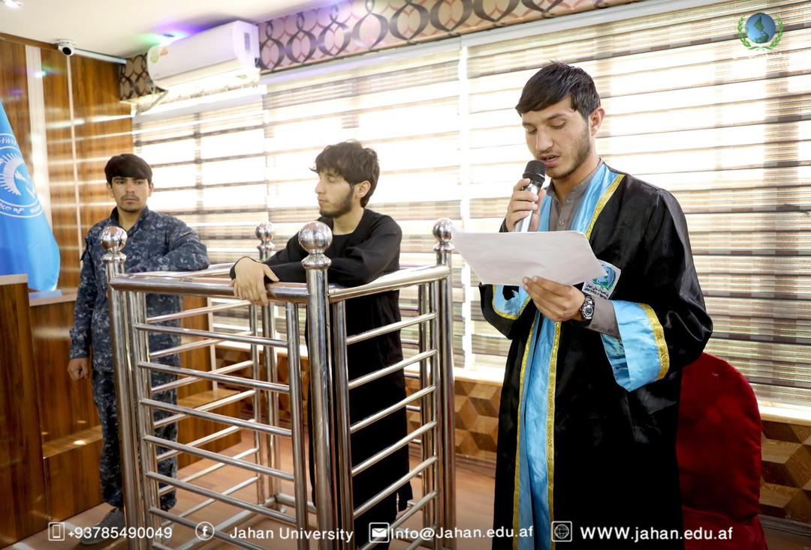

پوهنتون جهان جشن فراغت محصلان خویش را ضمن محفل باشکوهی تجلیل نمود. این جشن بزرگ به حمایت و همکاری بیدریغانۀ رهبری پوهنتون، با حضور اراکین بلندپایۀ دولتی؛ مقام محترم وزارت تحصیلات عالی، مقام محترم ولایت کابل، آمریت حوزۀ دهم امنیتی و سایر اراکین بلندپایۀ دولتی، نهادهای همکار خصوصی، فارغان، اولیای فارغان، مهمانان، رهبری و استادان پوهنتون برگزار گردید. این محفل نخست با تلاوت آیاتی از کلام الله مجید توسط قاری محمد صادق عمری آغاز گردید، سپس محترم دوکتور عبد الحکیم "نوری" رئیس شبکههای تعلیمی، تحصیلی و صحی جهان پس از خیرمقدمگویی برای حاضران و تبریکی برای فارغان، سخنان خویش را در خصوص اهمیت اِتمام یک دورۀ تحصیلی بیان داشته و فارغان را به خدمت به وطن و علم توصیه نمودند. پس از آن محترم شیخ ندامحمد "ندیم" وزیر محترم تحصیلات عالی پس از تهنیتگویی فراغت محصلان، سخنان سودمند خویش را در خصوص اهمیت دانش و تحصیل و بکاربردن آن برای خدمت به جامعه و وطن ارایه داشتند.
محکمهٔ تمثیلی با حضور داشت استادان، هیأت ژوری و جمعی از محصلان جهت تطبیق دروس مضمون نگارش حقوقی، در خصوص موضوع «شروع به جرم سرقت یک سیت طلا» برگزار گردید. این برنامهٔ عملی توسط استاد روح الله صمیم، استاد پوهنځی شرعیات با همکاری کلینیک حقوقی طی یکماه مدیریت و رهنمایی گردید. پس از اجرای محکمه، استاد علی احمد یعقوبی مسئول کلینیک حقوقی در ارتباط به اهمیت برگزاری محکمه وتشویق محصلین سخنان کوتاه خویش را ایراد فرمودند و بعداً استاد سلیمان مرادی، رئیس پوهنځی شرعیات اهمیت کارهای عملی را بیان نموده و محصلان را در زمینه تشویق نمودند. در پایان برای استاد صمیم و محصلان اشتراککننده تصدیقنامه توزیع گردید.
